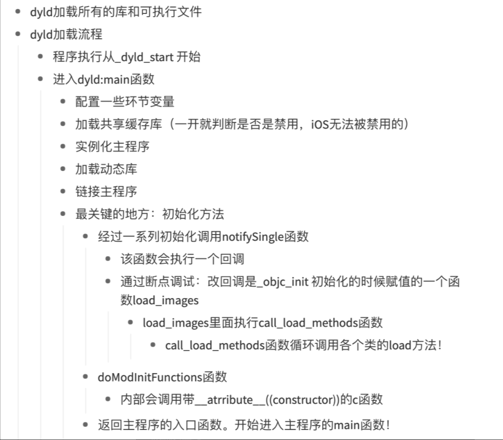

小记iOS反调试
前段时间在看雪上发了篇bypass反调试的笔记 ， 之后有不少人私信我反调试相关问题，不乏一些比较尖锐的问题把我也问懵了。后来反思了一下，虽然我跟大哥们学会了不少骚操作，但是没有自己系统的整理过，经常是根据问题去现找….
屏蔽调试器的方式
ptrace：是unix 系统中的一种系统调用，它提供了一个进程可以控制另一个进程运行的方法，并且可以修改被控制进程的内存和寄存器，主要用于调试和系统调用追踪。函数原型如下：
1 | NAME |
request代表请求类型,pid代表被调试进程的pid，常用的有：
- PTRACE_TRACEME：表示将被调试进程跟踪，对于每个进程，PTRACE_TRACEME只能被调用一次
- PTRACE_ATTACH：attach到pid进程上，相当于pid进程执行了PTRACE_TRACEME
- PTRACE_SYSCALL：使被调试进程继续运行,但是在下一个系统调用的入口处或出口处停下,或者是执行完一条指令后停下.
这里根据ptrace的特性，每个进程都只能被PTRACE_TRACEME一次，所以在程序的开始位置主动执行ptrace(PTRACE_TRACEME,0,0,0)后，其它进程就没办法再attach上了。
由于ptrace是系统调用，所以除了直接通过api的方式调用外，还可以通过其它方式来调用。提起系统调用自然就会想到用syscall来调:
在用户空间和内核空间之间，有一个叫做Syscall(系统调用, system call)的中间层，是连接用户态和内核态的桥梁。这样即提高了内核的安全型，也便于移植，只需实现同一套接口即可。Linux系统，用户空间通过向内核空间发出Syscall，产生软中断，从而让程序陷入内核态，执行相应的操作。对于每个系统调用都会有一个对应的系统调用号，比很多操作系统要少很多。
1 | NAME top |
使用syscall调用ptrace也就是 syscall(SYS_ptrace, PT_DENY_ATTACH, 0, 0, 0)
除了这种方式还可以通过svc调用来实现，看网上很多文章都有写用svc但是少有写svc是什么的。SVC指令在ARM体系中被归于异常处理类指令，该指令能允许用户程序调用内核，其格式如下：
1 | SVC{cond} |
与传统arm中使用svc 0 表示中断不一样，xnu中使用的是svc 0x80
1 | //xnu-3789.41.3/bsd/kern/syscall.h |
可以看到，系统调用号传给x16寄存器，然后指定svc 0x80来执行系统调用。所以上面的直接调用ptrace 和通过syscall调用ptrace也可以转成：
1 | //ptrace(0x31,0,0,0) |
基于特征去检测的方式
检测的方式相对于屏蔽调试器来说就多了许多：
- sysctl： 当一个进程被调试的时候，该进程会有一个标记来标记自己正在被调试，所以可以通过sysctl去查看当前进程的信息，看有没有这个标记位即可检查当前调试状态。
1 |
|
- isatty：测试标准输出文件描述符是否指向终端，当被调试的时候这点无疑
1 |
|
- ioctl：通过测试标准输出文件描述符的窗口大小，如果为0则可能是在被调试
1 |
|
这种基于检测方式反调试的，一般人的操作是检测到了后直接退出。但是退出这个也太明显了，很容易作为特征被分析出来。可以尝试的是通过svc调用后破坏堆栈，或者是直接将状态上传，然后在程序运行时结合其它暗桩去做处理，具体还是得根据业务逻辑来做。比如某看app检测到处于越狱环境中时，客户端可以拿到server的数据，但是客户端中的一切行为都不会影响到server中的数据，类比思路~
这里还要提一点，在分析的时候看到很多人有反调试的意识，但是都是在主程序的start中调用的，这样会有个问题，使用api的时候很容易就可以hook然后修改流程。所以这里我们最好是将反调试操作放在动态库中，因为自己的动态库要早于注入的动态库被加载，所以可一定程度防止被hook。这里还是要借用李斌同学的图来解释一下dyld的加载流程：

所以在做反调试的时候，可以尝试在动态库中使用汇编形式的多种手法混合使用，甚至是直接抠出内联汇编的硬编码，然后使用shellcode的方式去调用，具体可以参照我分析zoom的那篇文章中的部分。然后检测调试状态的可以在多处使用，检测到结果后灵活处理。